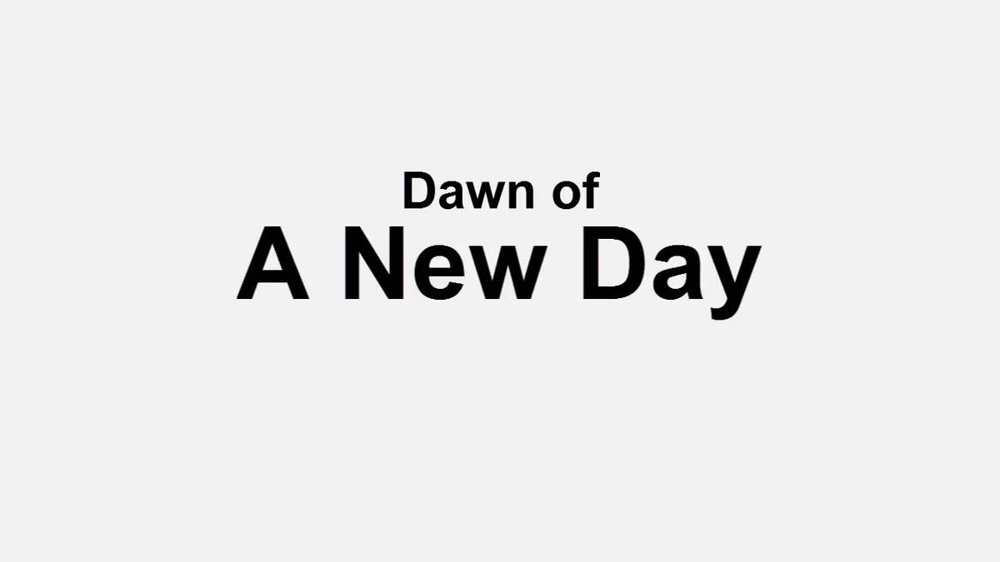
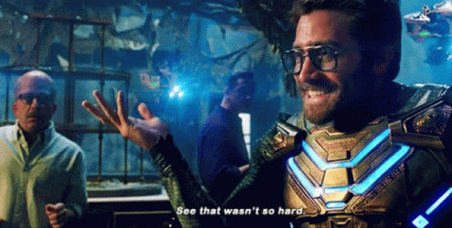

Introduction
Once upon a time, there was a program called BCML, that is, Breath of the Wild Cross-Platform Mod Loader. It existed because Breath of the Wild is very rather structurally hard to mod. The resource packing system, the resource size table, and similar features of the game make mods very collision-prone. Crashes, bugs, and other similar maladies appear frequently when multiple mods are naively combined. BCML was born in this darkness to heal broken RSTB files, colliding TitleBG packs, and similar woes.
Alas, BCML was ill-fated from the start. The idiosyncracies of Python, the improvised and ad hoc nature of the solutions, and the growing complexity of an expanding feature set wed to backward compatibility all conspired to ensure it would one day grind to a halt.
Enter UKMM, U-King Mod Manager, a complete, ground-up replacement for everything BCML did and more, written in pure Rust and compiled to a single binary. UKMM incorporates all of the lessons, skills, and general experience accumulated through the whole history of BOTW modding since BCML first began in a smooth, reliable, and robust mod management solution which solves nearly everything that made people (ever so often even justifiably) rage and screech about BCML.1

Except, of course, the requirement to have a complete game dump. There will never be a way around that, guys.
Prerequisites
Fortunately, compared to BCML there are relatively few prerequisites for UKMM.
- A legal copy of The Legend of Zelda: Breath of the Wild, dumped to your PC
- A modern version of Windows (10 or 11) or Linux
That's it. (No Python, yay!)
Dumping Your Game
One of the most important (and most lamented) prerequisites for BOTW mod management is to have a copy of your game ROM on your PC. For emulator users (Cemu, Yuzu, or Ryujinx), this is usually already the case, but for console-only players it can be more difficult.
You must have a modded/hacked console to dump your game. If you do not have a modded console, you cannot legally acquire a game dump to use with UKMM.
UKMM supports only the latest version of BOTW (1.5.0 on Wii U or 1.6.0 on Switch). Supported formats include:
- Unpacked MLC or RomFS dump
- WUA (aka ZArchive, Cemu-specific)
NSP and XCI support for Switch are possible eventual goals, but in the meantime if your dump is in one of those formats, you should unpack them. Yuzu and Ryujinx both have options to unpack the RomFS. If you don't use either of those, check GBAtemp, as the tooling for ROM format manipulation has changed too many times over the years to recommend a specific option.
Dumping Guides
- Dumping Games - ZeldaMods
- Using Dumpling | Cemu Guide
- Switch Dump & Installing Guide - Such Meme, Many Skill's Dumping Ground
Installation
Once you have all your prerequisites in order, you can begin to use UKMM.
UKMM consists of a single binary with all dependencies statically linked, making installation over 9000 times easier than BCML.
Steps
- Download the latest UKMM release for your operating system from GitHub
- Extract the archive (ZIP on Windows, tar on Linux) wherever suits you
- (Linux only) You may need to set the executable bit:
chmod +x ./ukmm - Run the executable. You have UKMM ready to go!
Configuration Storage
By default, UKMM will store your settings and similar data in an appropriate
configuration folder for your platform. On Windows this should be
%APPDATA%\ukmm and on Linux ~/.config/ukmm.
You can alternatively launch UKMM with the --portable flag, in which case it
will use a config folder next to the UKMM executable.

Configuration
When you first run UKMM, you will need to configure some basic settings before you can do much of anything.
General Settings
Settings under the General category apply to UKMM as a whole, not specifically Wii U or Switch mode.
- Current Mode: Specifies whether to operate in Wii U or Switch mode. If using an emulator, go with the mode of your emulator's platform,1 so Wii U for Cemu or Switch for Yuzu/Ryujinx.
- Storage Folder: Where to store mods, profiles, mod projects, etc. Defaults
to
~/.local/share/ukmmon Linux or%LOCALAPPDATA%\ukmmon Windows. Make sure to change this setting if you want to store mods and merges on a different partition or external drive. - Unpack Mods: By default UKMM stores mods as ZIP files with ZSTD compression. Turn on this option to unpack and decompress them instead, potentially improving performance at the cost of disk space.
- Show Changelog: Whether to show a changelog after UKMM updates. Simple enough, right?
Platform-Specific Settings
Most other settings apply independently to Switch or Wii U mode. The simplest of these is below:
- Language: The language and region matching your game dump and play settings. If you for any reason do not set this correctly, you will probably not see any of changes any of your mods make to in-game text (dialogue, item descriptions, etc.).
The rest of the platform-specific settings will be covered in more detail in the next two sections.
Should I really have to specify this? Probably not. Does someone somewhere need me to? Yes.
Dump Settings
As noted earlier, you need a dump of BOTW on your PC to use UKMM. (If perchance you are curious why, here's an explanation.) I'll break down how to set this correctly per platform.
Wii U
For Wii U, you have two supported dump options: unpacked MLC files (most common)
or a .wua file (Cemu-specific format).
For information on .wua files, check the changelog for Cemu
v1.27.0b or the ZArchive
repo. The rest of this guide will focus on
an unpacked dump.
Unpacked Dump
There are three folders to specify for an unpacked game dump.
-
Base Folder: This folder is the root of the plain, v1.0 BOTW assets which were included on the disk. If you are using Cemu, it will usually be in your MLC folder, with a path such as this (part of the title ID will be different for the EU or JP versions):
mlc01/usr/title/00050000/101C9400/contentYou can verify the path is correct if it contains
Pack/Dungeon001.pack. -
Update Folder: The contains the BOTW v1.5.0 update data. It is absolutely necessary for the game to even run. If you are using Cemu, it will usually have a similar path to the base folder, but with an
Eat the end of the first half of the title ID:
mlc01/usr/title/0005000E/101C9400/contentYou can verify the path is correct if it contains over 7000 files in the
Actor/Packfolder. -
DLC Folder: This contains most of the assets for the BOTW DLC. This one does not usually end in
content, but must go one level further into a0010folder because of the way multiple kinds of add-on content are handled. If you are using Cemu, it will usually have a similar path to the base folder, but with aCat the end of the first half of the title ID:
mlc01/usr/title/0005000C/101C9400/content/0010You can verify the path is correct if it contains
Pack/AocMainField.pack.
Switch
At present only unpacked RomFS dumps are supported, but in the future NSP or XCI support may be added. In the meantime, if you have an NSP or XCI, dump its RomFS using Yuzu, Ryujinx, or another tool.
Unpacked Dump
There are two folders to specify for an unpacked game dump.
-
Base Folder: On Switch, following the usual guides with
nxdumptool, this will usually be the combined base game and v1.6.0 update files. The path will probably contain the title ID of01007EF00011E800and end inromfs.You can verify the path is correct if it contains over 7000 files in the
Actor/Packfolder. -
DLC Folder: This contains most of the assets for the BOTW DLC. The path will probably contain a title ID like
01007EF00011F001and end inromfs.You can verify the path is correct if it contains
Pack/AocMainField.pack.
Deployment Config
When you actually want to use your merged mods, they will need to be deployed. This is the most critical step to actually using mods when you play the game.
Note that you have the option to deploy automatically or not. If you do not deploy automatically, you can make whatever changes to your load order, and even apply them, but still not export the final merged mod to its destination until you're ready. This is most useful for console players, who, for example, might want to manage mods on the PC at any time but wait until they're ready to insert their SD card before deploying the final pack. For emulator users, it is generally more useful to use automatic deployment.
Deployment Locations
Where should you deploy your mods? It depends mostly on where you play your game.
Cemu
Cemu users will generally want to deploy their mods as a graphic pack. In that
case you will need to set your deployment location somewhere inside Cemu's
graphicPacks folder. A customary option is a new folder named
BreathOfTheWild_UKMM. So, for example, the full path might be something like:
C:\Cemu\graphicPacks\BreathOfTheWild_UKMM.
Additional note for Cemu users: You almost certainly want the "Deploy rules.txt" option selected for Cemu integration.
Wii U
Wii U users have a few options, but the most widely used and supported method to
load mods is via SDCafiine for the Wii U Plugin
System.
In that case you would generally want your mods to end up on your SD card under
something like /sdcafiine/<title ID>/ukmm. If you use UKMM while your SD card
is not in, however, you might want to set a temporary directory for deploying
mods, or you can merge without the SD card but wait and deploy when the SD card
is mountained.
Switch
With the Switch, you generally want your mods to end up on your SD card under
/atmosphere/contents. If you use UKMM while your SD card is not in, however,
you might want to set a temporary directory for deploying mods, or you can merge
without the SD card but wait and deploy when the SD card is mountained.
Yuzu or Ryujinx
Yuzu and Ryujinx both allow you to install mods in two different locations, one specific to their own files and the other for emulating Atmosphere's LayeredFS setup on SD card. You must use the LayeredFS arrangement.
So, for example, the Yuzu user storage folder is
C:\Users\[USER]\AppData\Roaming\yuzu on Windows or ~/.local/share/yuzu on
Linux. In this case, you want your deployment folder at
[USER-FOLDER]/sdmc/atmosphere/contents.
Note on Switch-based deployment: When using Switch, Yuzu, or Ryujinx, you will need to generally use the
contentsfolder as the actual deployment folder, and the two title ID folders for BOTW and its DLC will be used to store mod files. If you mod other games besides BOTW, note that they will also have their mods in a title ID folder in the samecontentsfolder, and some operations could affect them. Be aware of this particularly when using the symlink method discussed below.
Deployment Methods
UKMM offers three methods to deploy mods. Which one is best depends heavily on your system, so I recommend taking careful note of these options and how they work.
Copy
The simplest option. It just copies everything from UKMM's internal merging folder into the deployment folder.
Advantages
- Easy
- Pretty much always works
Disadvantages
- Can be very slow
- Wastes disk space
Best for: SD cards
Hard Links
A safe option to save space when everything is on the same volume/partition. It creates a hard link of every file from UKMM's internal merging folder into the deployment folder, which uses no additional disk space. Both copies are literally the same file.

Advantages
- Pretty fast
- No wasted disk space
Disadvantages
- Only works if everything is on the same volume/partition
- Slower than symlinks
Best for: Windows systems where everything is on one volume
Symlink
Turns the deployment folder into a mere link to the UKMM's internal merged folder. This means deployment isn't even needed; all changes to your load order are automatically present wherever you have your mods deployed.
Unfortunately, this is also the weirdest option on Windows. (On Linux it should pretty much Just Work™.) Windows is weird about symbolic links. Because of this, UKMM will first attempt to use a "directory junction," a dumb alternative to a symbolic link which only works on internal drives. Removeable drives and networked drives are not supported. If that fails, it will try to use a regular directory symbolic link. These have fewer restrictions, but usually (for some dumb reason) require administrator permissions to create.1
Note for Switch/Yuzu/Ryujinx: Since the deployment folder will need to be set the
atmosphere/contentsroot, and it will deploy the two title ID folders for BOTW and its DLC inside, you may run into issues if you also have mods for other games (other title IDs). They might be erased or end up inside UKMM's storage folder, depening on your precise process and settings.
So, in sum:
Advantages
- Instant, transparent deployment
- No wasted disk space
Disadvantages
- Windows support is complicated
- No chance to change your mind before deploying mods after applying load order changes
- Does not mesh well for Switch users modding other games
Best for: Linux systems, or advanced users on Windows
Starting back in Windows 10, build 14972, it has been possible to create symbolic links on Windows without administrator permissions, but it's not automatic. Check the Windows blog announcement for more information.
Interface
 The main UKMM interface
The main UKMM interface
General Use
The UKMM interface is largely divided into docked, tabbed sections. These can be moved and resized into whatever arrangement you like (and you can use the Reset button under the Window menu if you end up not liking it). Let's cover a few of the most important parts.
Mods Tab
Most of your real business is done here. Along the top bar of the mods tab you can switch, add, or manage mod profiles.
Beneath is a table with all installed mods in the current profile. You can sort it by name, category, version, etc. by clicking on the respective headers. Mods can be enabled or disabled using the toggle boxes on their left.
Mods can be dragged and dropped to change their priority order. Hold Shift or Control to select multiple mods. Right-clicking a mod exposes a few other options.
No changes made on the mod list take effect until you apply them, which brings us to…
Pending Changes Window
Any and all changes made to your mod collection will be queued for application. When changes are pending, the Pending Changes window will appear in the bottom right of the screen.
- If you click Cancel, all changes will be undone and your mod profile will revert to its last saved state.
- If you click Apply, your new mod settings will be saved, and all game files affected by the accumulated changes will be preprocessed and merged. (Note: This can take some time if very large mods are involved.)
Info Tab
This is Captain Obvious, here to inform you that the Info tab shows information about the currently selected mod. There's not a great deal to say about this except for two potentially noteworthy features:
- Option Settings: If you have a mod which includes configurable options, the Info tab will show which options are currently enabled. It will also have an icon button to change the enabled options. If you change options, those changes will be queued in the Pending Changes window per usual.
- Manifest: For reference and perhaps debugging, the Info tab will also show a manifest listing what files are edited by the current mod. Can potentially be useful if tracking down some unexpected mod behavior.
Install Tab
For convenience, UKMM also includes a file browser tab for quick mod installation. Use it if you want, or don't; it's up to you.
More
- Most of the Packaging tab is self-explanatory if you understand packaging UKMM mods.
- Most of what you need to know about the Settings tab goes back to Configuration.
- The Deploy tab shows your current deployment settings. If you don't have automatic deployment turned on, you will need to click the Deploy button here to deploy your mods to their final destination.
- The Log tab is pretty much what it says on the tin. If you need to track down
some error or problem, check here. If the default logging information isn't
enough, you can enable verbose logging in the Help menu. If you don't care
about performance and really need to dig deep, you can try setting the
environment variable
RUST_LOG=trace, but be warned, this is extreme logging that will slow down most operations.
Using Mods
So, you have everything set up. How does using mods actually work now?
-
Add mods to your current profile. You can add mods in one of three ways, which are functionally identical:
- Click the Open Mod… button in the File menu.
- Click the Open icon in the Install tab.
- Select the mod in the Install tab's file browser.
Note: UKMM supports installing mods in three formats:
- Mods packaged by UKMM (obviously)
- BCML 3 BNPs
- Graphic pack/RomFS mods
Note that for graphic pack or RomFS mods, the folder structure needs to match what is described in the UKMM mod format instructions. By default UKMM will try to read any relevant metadata from a
rules.txtorinfo.jsonfile, but if those are absent it will prompt for the basic information. -
Enable any mods you are ready to use. Mods start disabled until you check the box.
-
Click the Apply button in the Pending Changes window to apply your current mod configuration. All game files affected by the changes to your mod setup will be reprocessed and merged afresh.
-
If you have don't automatic deployment turned on, click the Deploy button in the Deploy tab to export the finished mod pack to its intended destination.
-
If you are a console user (or doing something else different), move or copy the deployed mods to their final destination (such an SD card set up for SDCafiine for Wii U or LayeredFS for Switch)
For Cemu users, auto deploy is recommended and the destination is usually a specific graphic pack folder, in which case your usual process will be only 1-3.
This is the basic workflow. More details will be addressed where relevant. For information about how to use SDCafiine or LayeredFS to apply your mods on console, check the guide on ZeldaMods.
Load Order
When mods make conflicting changes, they will be applied in a designated order of priority. Priority starts at 0. Priority 0 is the lowest priority, and anything with a higher priority will overwrite it where necessary.
To repeat: higher priority mods overwrite lower priority mods.
Here are some general tips about load order:
- In general, skins should be higher than edits to behaviour or stats, at least for the same actors. For example: the Linkle mod should be higher than a mod which edits armour stats, otherwise you could have texture bugs.
- Optional components, addons, compatibility patches, or any mods that are based on other mods should always be given higher priority than the mods they're based on.
- Large overhaul-type mods (e.g. Second Wind or Relics of the Past) are complicated. When possible, they should take lower priority than other mods, functioning like an extension of the base game. They may, however, sometimes need to take priority over some or most other mods if more complex features (like some of those in Survival of the Wild) are not working properly.
- Any time you experience crashing or odd glitches, it can be worth it to try rearranging your load order.
Apart from these basic guidelines, the merging process tends to make load order a fairly forgiving system. For the most part, load order will only matter if you have two mods that make obviously incompatible edits, in which case it's often as simple as just making sure you have the mod with the preferred behavior set higher in priority.
Mod Format
UKMM stores mods in its own, highly efficient and compressed format. For technical details, see the final section of this page.
Format for Development
As a mod developer, you don't need to know anything about the internal format. Rather, you can continue to create mods with the traditional graphic pack/RomFS structure, with extensions for mod options, detailed below. There are no differences between this format between BCML and UKMM.
Wii U
.
├── content
├── aoc (optional: for DLC files)
└── options (optional: for optional mod components)
├── option1 (any name allowed)
│ ├── content
│ └── aoc
├── option2
│ └── content
└── ...
Switch
.
├── 01007EF00011E000
│ └── romfs
├── 01007EF00011F001 (optional: for DLC files)
│ └── romfs
└── options (optional: for optional mod components)
├── option1 (any name allowed)
│ ├── 01007EF00011E000
│ │ └── romfs
│ └── 01007EF00011F001
│ └── romfs
├── option2
│ └── 01007EF00011E000
│ └── romfs
└── ...
Just so you know: You can include a preview image in your mod by placing it
in the root folder with a name like thumb.jpg. (Valid names include thumb,
thumbnail, and preview. Valid formats include PNG, JPG, and SVG.)
Dependencies and Options
You can specify any number of other mods as dependencies for your mod. If the user attempts to install without the necessary mod(s), UKMM will throw an error.
You can also specify optional components for your mod. To add mod options, first create an "options" folder in the mod root. Then make subfolders for each option you want to add. In each subfolder, you will need to replicate a normal mod structure, but containing only files different from the main mod.
Options are placed in groups, offering either multiple or exclusive choice. While there are no requirements about how multiple-choice options are grouped, for exclusive choice, only one option in that group can be selected.
Cross-platform Mods
UKMM has limited support for mods that work with both the Wii U and Switch versions of the game. This is possible if and only if the mod consists solely of mergeable assets. While I cannot easily provide a complete list of mergeable assets (other than by referring you to the source code), in general this most commonly excludes models, textures, audio, and Havok physics. To create a cross-platform mod, check the "Mark as cross-platform" option in the mod packaging view.
Internal Format Details
UKMM mods are packaged in ordinary ZIP files. The contents include mod metadata, a manifest of modified files, and UKMM-processed resources stored at their canonical resource paths. An example contents in this format is below:
.
├── Actor
│ └── ActorInfo.product.byml
├── Map
│ └── MainField
│ └── Static.mubin
├── manifest.yml
└── meta.yml
Compression
No ZIP-wide compression is used. The manifest and meta files are stored without
compression, whereas mod files are compressed with zstd. This makes it quick
and easy to parse mod information while nonetheless storing the real contents
with an optimal balance of size and decompresison performance.
Meta File
Mod metadata is stored in the YAML format under meta.yml in the ZIP root. It
contains the mod name, description, option information, etc. Example contents:
name: Test Mod
version: 1.0.0
author: Nicene Nerd
category: Other
description: A sample UKMM mod
platform: !Specific Wii U
url: null
option_groups: []
masters: {}
Manifest File
A manifest of all real files (as opposed to canonical resources) included in the
mod is stored in YAML format under manifest.yml in the ZIP root. It contains
separately a list of each base game file and each DLC file. Example contents:
content:
- Actor/ActorInfo.product.sbyml
- Actor/Pack/AncientBallSwitch2C.sbactorpack
aoc:
- Map/CDungeon/Static.smubin
- Pack/AocMainField.pack
Resources
All modified files, included nested files stored in SARCs, are stored at their
canonical resource paths. Special note: These are not stored as ordinary
game files in their original formats. Rather, UKMM parses most files into
diffable, mergeable data structures representing their semantic content, and
then stores only the diffs, serialized to CBOR using
minicbor-ser.
Even files which UKMM cannot parse and merge are still stored with CBOR metadata and thus cannot be used in the game as-is.
Mod Options
Each option is stored in an options folder roughly the same layout as it is in
the pre-packaging development format, but each option includes its own manifest
and canonical resources.
Troubleshooting
Here are the most general rules for troubleshooting:
- Confirm your settings are valid, especially your game dump.
- If a problem happens when installing a mod, check whether it happens to other mods and, if so, whether it is all of them or if there seems to be something they have in common.
- Read over all the docs that look remotely relevant to your problem.
- If you need help, there are two main places to go:
- If you think the problem is probably with your own settings, a specific mod or mods, or anything else that could be solved without patching UKMM, go to my Discord server.
- If you think the problem is probably with UKMM itself and would require changes to the code, file an issue on GitHub.
- In case the program crashes completely, run it from a terminal/Command Prompt and check for panic output.
Solutions to some known problems follow:
The UI is scaled badly and unusable.
This happens on some systems, particularly Steam Deck, for unknown reasons,
but can be fixed by setting the environment variable
WINIT_X11_SCALE_FACTOR to 1.0. If you launch UKMM from the terminal, running
it as WINIT_X11_SCALE_FACTOR=1.0 ukmm from the UKMM folder will work.
Otherwise, you may try setting it in your ~/.profile or ~/.Xprofile, e.g.
by adding the line export WINIT_X11_SCALE_FACTOR=1.0. If perchance you run
UKMM from Steam for some reason, you can set the launch options as
WINIT_X11_SCALE_FACTOR=1.0 %command%.
Also note that some desktop environments contain tools for setting environment variables. If you need help with this, ArchWiki has an excellent article on the topic.
"No config for current platform"
If you see this error, it means that, for some reason, you skipped the initial setup where you configure all your settings for your game. Go back to this page and start there.
Migrating from BCML
For BCML users, a lot of the experience of UKMM should be familiar, but there are some important differences. For a smoother transition, keep the following in mind:
- You can attempt to import your BCML settings and mods by clicking Migrate from BCML in the settings tab.
- The merge and deploy process in UKMM is just plain different from BCML, though it can be setup to work functionally the same way. For more information on this, read over the deployment page.
- For mod developers: do not attempt to edit UKMM ZIPs directly. I know this was common in some circles with BNPs, but this will generally not work, will probably break your mod, and is officially frowned upon.

My face if you directly edit a UKMM mod ZIP.
- To be continued as feedback flows in…